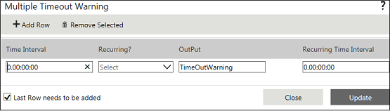

No
Task - Multiple Timeout Warning
Multiple TimeOut Warning Property window
You can set the Multiple Timeout Warning in this property window. To open this window, click the button for the 'Multiple TimeOut Warning' property.

The window has two tabs at the top to manage the rows of timeout settings in the grid.
- Add Row - You can click this tab to add the newly entered timeout setting and display a new row to the grid where you can add another timeout.
- Remove Selected - You can click this tab to remove the timeout setting row selected in the grid.
The grid has the following parameters that you need to specify for the new timeout setting.
- Time Interval - You can use this field to enter the time interval in which you want to generate a timeout warning. You must enter the time in d.hh:mm:ss format.
- Recurring? - You can use the drop down in this field to indicate whether the timeout is recurring or not. You can select "Yes" to set the timeout warning to recur.
- Output - You can enter the output message corresponding to the timeout warning here.
- Recurring Time Interval - You can set the time interval in which the timeout warning has to recur here. Enter the time in d.hh:mm:ss format.
There are two buttons and a check box at the bottom of the screen.
- Update - You can click this button to save the newly added timeout settings.
- Close - You can click this to close the property window without saving the newly added timeout settings.
- Last Row needs to be added - You need to select this check box to save the last row added.